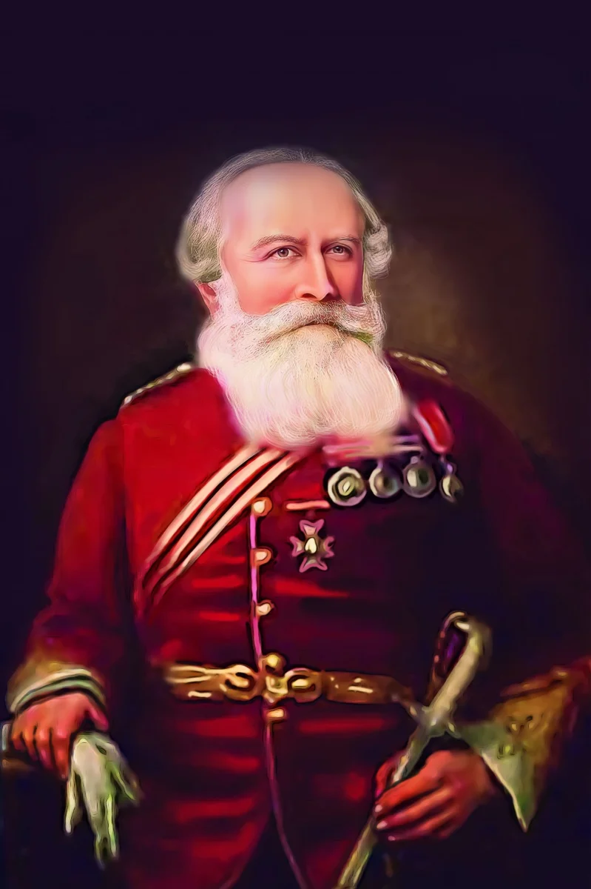
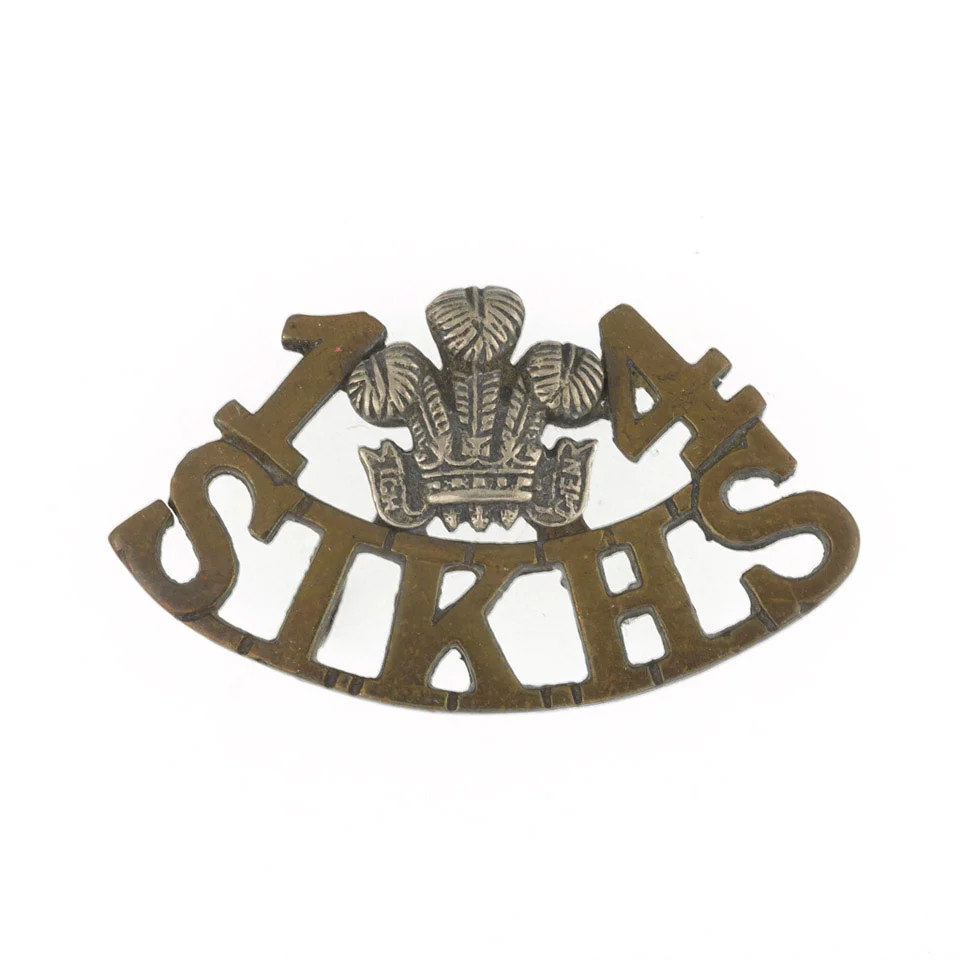
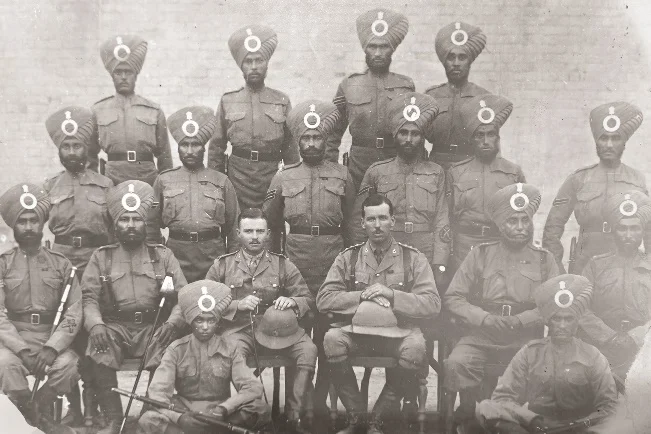
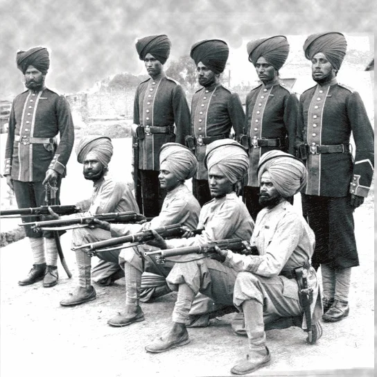
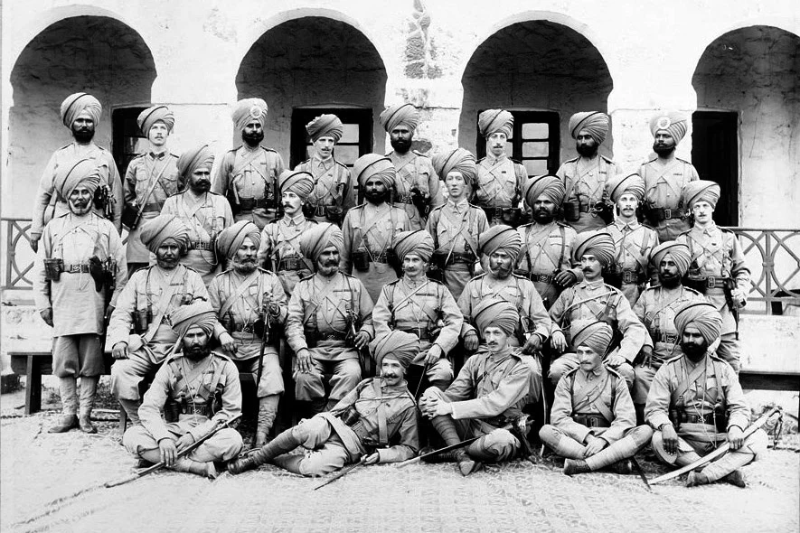
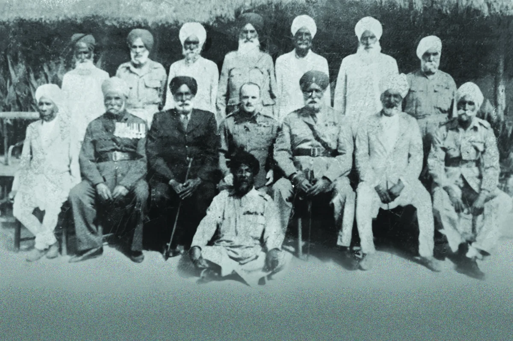
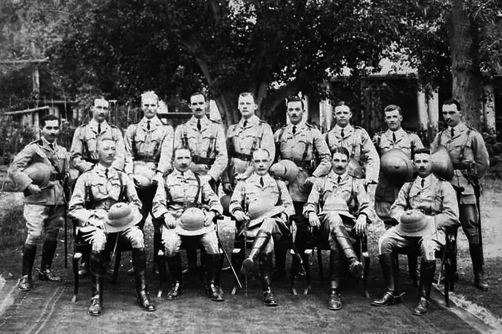
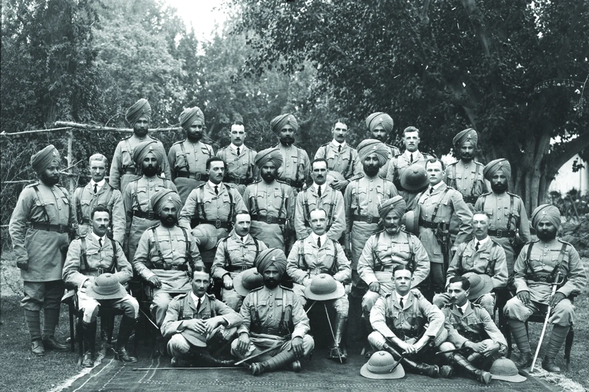
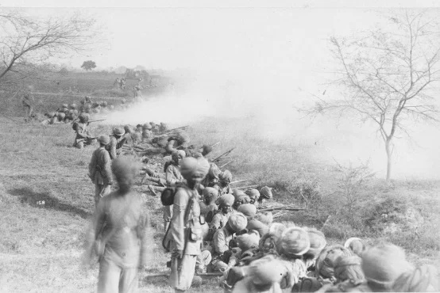
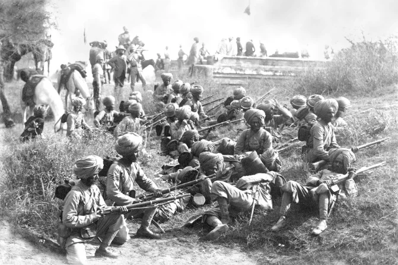

14वीं फिरीजपोरे सिख, जिसे फिरीजपोरे रेजिमेंट के नाम से भी जाना जाता है, को 30 जुलाई 1846 को कैप्टन जी. टैब्स ने प्रथम एंग्लो-सिख युद्ध के बाद औपचारिक रूप से स्थापित किया था। सिविल कमिश्नर सर हेनरी लॉरेंस और एन्साइन जे. ब्रैसीयर ने भंग हो चुकी खालसा सेना के सैनिकों की भर्ती की, और सतलज नदी के दक्षिण में चार सौ सैनिक इकट्ठा किए। प्रारंभ में लाल ट्यूनिक पहने हुए पीले किनारे के साथ, रेजिमेंट ने पारंपरिक पगड़ी पहनने के लिए सफलतापूर्वक अभियान चलाया, बजाय नियामक कैप के। लॉर्ड गौर ने 24 दिसंबर 1846 को किंग्स कलर प्रस्तुत किया, इसके बाद 1847 में यूनिट को पर्सकशन मस्केट्स प्राप्त हुए। यह रेजिमेंट आगरा, मेरठ और पटना में सेवा दी, और स्थिरता बनाए रखने में योगदान दिया। 1922 में, इसे 1st बटालियन, 11th सिख रेजिमेंट के रूप में पुनः नामित किया गया, और बाद में 1945 में इसे 1st बटालियन, The सिख रेजिमेंट के रूप में पुनः नामित किया गया। 1981 में, यांत्रिकीकरण योजना के हिस्से के रूप में, इस प्रतिष्ठित इकाई को 4th बटालियन, The Mechanised इन्फैंट्री में परिवर्तित किया गया।
अपने फोन पर इस कलाकृति को देखने के लिए स्कैन करें।